Neural Networks: If I Only Had a Brain
- hw06 #FIXME:URL
Links
Books
- Hands-on Machine Learning, Géron and companion repository — practical Keras-focused, code-first introduction to ML and deep learning
- Deep Learning with Python, Chollet - Manning — the Keras book, practical and accessible
- Dive into Deep Learning - d2l.ai — hands-on with code examples
- Deep Learning, Goodfellow, Bengio & Courville - free online — comprehensive theory reference
Tutorials & Articles
- A Visual Introduction to Neural Networks
- 3Blue1Brown: Neural Networks - excellent visual series
- TensorFlow Playground - interactive neural network visualization
- Neural Network Zoo - visual guide to network architectures
Documentation
Health Data Science & Deep Learning
- Miotto et al. (2018). Deep learning for healthcare: review, opportunities and challenges. Briefings in Bioinformatics
- Esteva et al. (2017). Dermatologist-level classification of skin cancer with deep neural networks. Nature
- Rajpurkar et al. (2017). CheXNet: Radiologist-level pneumonia detection on chest X-rays with deep learning
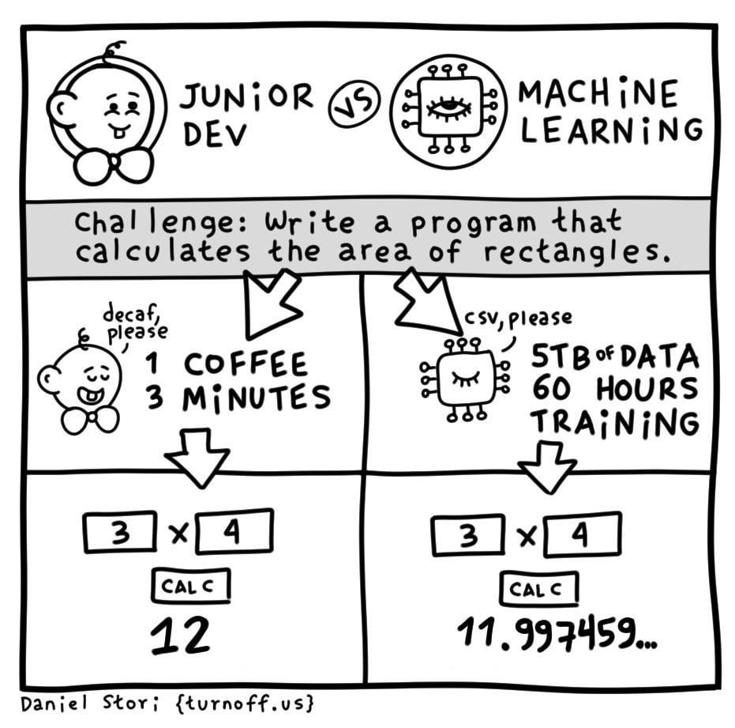
Neural Networks Overview
Neural networks are computing systems loosely inspired by biological brains. They learn patterns from data by adjusting internal parameters — no explicit programming required. This section covers the biological analogy, how artificial neurons work, and why neural networks are so powerful.
Biological Inspiration
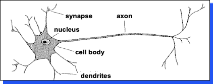
A neuron has:
- Branching input (dendrites)
- Branching output (the axon)
Information flows from dendrites to axon via the cell body. Axon connects to dendrites via synapses:
- Synapses vary in strength
- Synapses may be excitatory or inhibitory
The Tank Detector Parable
In the 1980s, the Pentagon allegedly trained a neural network to detect tanks in photos. They split their photos into training and test sets, and the network learned to identify every test photo correctly.
Then they tested on new photos. The results were completely random.
After investigation, they discovered: all tank photos were taken on sunny days, while tree-only photos were taken on cloudy days. The military was the proud owner of a computer that could tell you if it was sunny.
Note: This story is likely apocryphal, but it’s a perfect illustration of data bias — and why representative, diverse training data matters more than a clever model.
Artificial Neural Networks
Neural networks draw inspiration from biological neural networks. The mapping is loose but useful:
| Biological | Artificial | Role |
|---|---|---|
| Dendrites | Inputs (\(x_i\)) | Receive incoming signals |
| Synaptic strength | Weights (\(w_i\)) | Control how much each input matters |
| Cell body | Summation + activation | Combine inputs and decide whether to “fire” |
| Axon | Output (\(y\)) | Pass the result to the next layer |
A single artificial neuron takes multiple inputs, multiplies each by a weight, sums them up, and passes the result through an activation function:
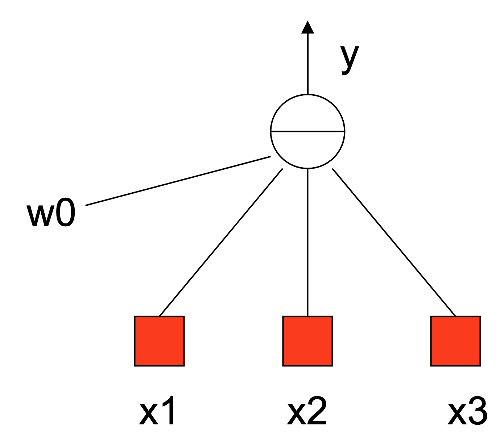
Mathematically, this is a weighted sum plus bias, passed through a non-linear function \(f\):
Stack these neurons into layers — input, hidden, output — and you get a neural network:
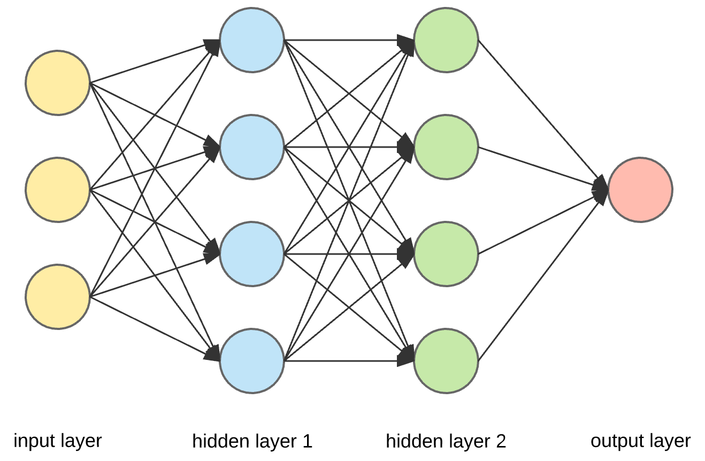
Each neuron:
- Receives inputs (\(x_1, x_2, ..., x_n\)), each multiplied by a weight (\(w_1, w_2, ..., w_n\))
- Sums the weighted inputs plus a bias (\(b\))
- Passes the result through an activation function (\(f\))
- Produces output: \(y = f(\sum w_i x_i + b)\)
Reference Card: Artificial Neuron
| Component | Details |
|---|---|
| Inputs | Feature values (\(x_1, x_2, ..., x_n\)) from data or previous layer |
| Weights | Learned parameters (\(w_i\)) controlling each input’s influence |
| Bias | Offset term (\(b\)) allowing the neuron to shift its activation |
| Activation | Non-linear function applied to the weighted sum (e.g., ReLU, sigmoid) |
| Output | \(y = f(\sum w_i x_i + b)\) — fed to the next layer or used as prediction |
Network Structure
Neurons are organized into layers:
- Input layer — receives the raw features (one neuron per feature)
- Hidden layers — intermediate layers where the network learns patterns (not directly visible to us — hence “hidden”)
- Output layer — produces the final prediction (one neuron per class, or one for regression)
A feedforward network passes data in one direction: input → hidden layers → output. No loops.
An epoch is one complete pass through the entire training dataset. Training typically runs for many epochs, with the model improving each time.
Universal Approximation Theorem
One of the most profound aspects of neural networks: a feedforward network with a single hidden layer can approximate any continuous function, given sufficient neurons and appropriate activation functions.
In practice, this means a sufficiently large network can learn to map any input to any output — classifying images, predicting patient outcomes, or translating languages. Here’s the intuition: given enough neurons, the network can approximate the decision boundary between “cat” and “dog” (or any other categories) to arbitrary precision.
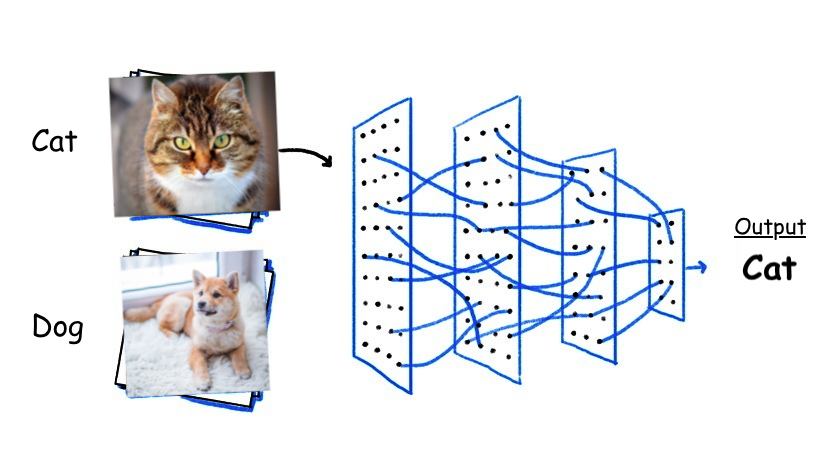
Deeper networks with fewer neurons per layer tend to generalize better than very wide, shallow networks.
LIVE DEMO!
Activation Functions
Remember the biological neuron’s cell body — it receives inputs from dendrites and “decides” whether to fire. The activation function is the artificial version of that decision. It takes the weighted sum of inputs and transforms it into the neuron’s output.
Activation functions introduce non-linearity into neural networks. Without them, stacking layers of linear operations just produces another linear operation — no matter how deep the network, it would behave like a single linear model, unable to capture the complex patterns that make neural networks powerful. You’ve already seen one activation function in disguise: the sigmoid function that powers logistic regression from last lecture. Neural networks generalize this idea — every neuron gets its own activation function.
Each activation function has trade-offs. The right choice depends on where in the network the function is used (hidden layer vs. output layer) and what kind of prediction you’re making.
Why this matters for deep networks: Some activation functions (like sigmoid) squash their output into a narrow range. When you stack many layers, these small values get multiplied together and shrink toward zero — meaning early layers barely get updated during training. This is called the vanishing gradient problem (more on gradients in the Backpropagation section below). ReLU largely avoids this issue, which is why it’s the default choice for hidden layers.
Reference Card: Activation Functions
| Function | Formula | Range | Pros | Cons | Use Cases |
|---|---|---|---|---|---|
| ReLU | \(\max(0, x)\) | \([0, \infty)\) | Fast, mitigates vanishing gradients | Dying ReLU problem | Hidden layers (default) |
| Sigmoid | \(\frac{1}{1 + e^{-x}}\) | \((0, 1)\) | Outputs probability | Vanishing gradients, not zero-centered | Binary output layer |
| Tanh | \(\frac{e^x - e^{-x}}{e^x + e^{-x}}\) | \((-1, 1)\) | Zero-centered | Vanishing gradients | Hidden layers (RNNs) |
| Leaky ReLU | \(\max(0.01x, x)\) | \((-\infty, \infty)\) | No dying neurons | Small negative gradient | When dying ReLU is a concern |
| Softmax | \(\frac{e^{x_i}}{\sum e^{x_j}}\) | \((0, 1)\) | Multi-class probabilities | Computationally expensive | Multi-class output layer |
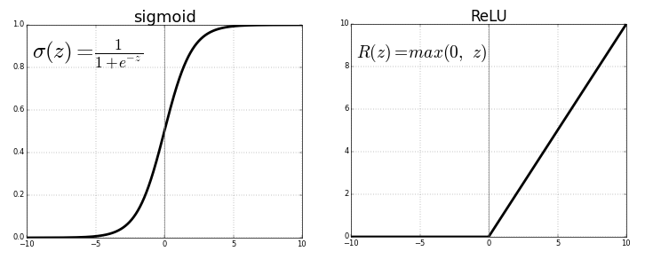
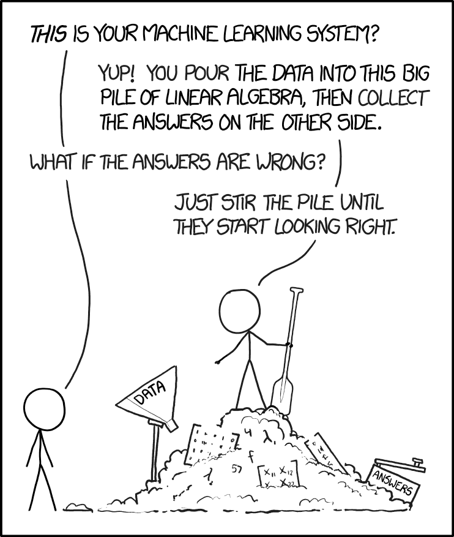
How Neural Networks Learn
In the last lecture, we trained classifiers — logistic regression, random forests, XGBoost — with a single call to .fit() and evaluated them with train/test splits, cross-validation, and metrics like precision, recall, and AUC. Neural networks follow the same high-level pattern — split your data, fit on training, evaluate on validation — and the same evaluation metrics apply. But the training process itself is more involved.
Instead of a closed-form solution, neural networks learn iteratively: make a prediction, measure the error, adjust weights, repeat. Three concepts work together: a cost function measures error, backpropagation distributes that error to each weight, and gradient descent updates weights to reduce error.
Remember from last lecture: Always split your data before training. Fit preprocessors (like
StandardScaler) on training data only to prevent data leakage. Usestratify=ywhen splitting classification datasets.
Cost Functions
The cost function (or loss function) quantifies how wrong the model’s predictions are. Training minimizes this value.
Consider a concrete example: your model predicts a 30% chance of disease for a patient who actually has the disease. How bad is that mistake? What about predicting 90% for a healthy patient? The cost function answers these questions with a single number — and different cost functions answer them differently. Cross-entropy penalizes confident wrong answers harshly, while MSE treats all errors more uniformly.
The choice of loss function depends on your task — just like choosing between accuracy, precision, and recall in the last lecture, different loss functions emphasize different kinds of errors.
Reference Card: Cost Functions
| Function | Formula | Best For | Notes |
|---|---|---|---|
| MSE | \(\frac{1}{n}\sum(y - \hat{y})^2\) | Regression | Penalizes large errors heavily |
| Cross-Entropy | \(-\sum y \log(\hat{y})\) | Multi-class classification | Works with softmax output |
| Binary Cross-Entropy | \(-[y\log(\hat{y}) + (1-y)\log(1-\hat{y})]\) | Binary classification | Works with sigmoid output |
| Huber Loss | MSE when small, MAE when large | Robust regression | Less sensitive to outliers than MSE |
Backpropagation
Backpropagation is the algorithm that makes neural network training possible. A neural network might have thousands or millions of weights — backpropagation efficiently computes how much each one contributed to the overall error, then distributes that error backward through the network.
You don’t need to implement this yourself (Keras handles it inside model.fit()), but understanding the idea helps you diagnose training problems.
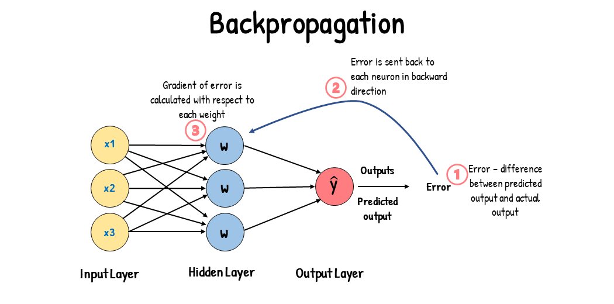
The process:
- Forward pass — input flows through the network, producing a prediction
- Compute loss — compare prediction to true label using the cost function
- Backward pass — compute the gradient of the loss with respect to each weight using the chain rule of calculus
- Update weights — adjust each weight proportionally to its gradient
Reference Card: Backpropagation
| Component | Details |
|---|---|
| Purpose | Compute gradients of the loss with respect to every weight in the network |
| Mechanism | Apply the chain rule layer-by-layer, from output back to input |
| Forward Pass | Compute and cache activations at each layer |
| Backward Pass | Propagate error gradients from output to input layers |
| Key Insight | Each weight’s gradient tells us how much changing that weight would change the loss |
| In Keras | Handled automatically by model.fit() — no manual implementation needed |
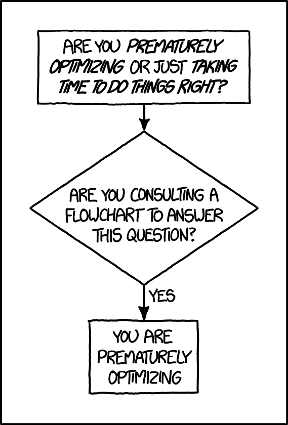
Gradient Descent
Gradient descent is the optimization algorithm that uses the gradients from backpropagation to update weights. Think of it as navigating a hilly landscape in fog — you can only feel the slope under your feet and step downhill. The “landscape” is the loss surface — a map of how the cost function changes as you adjust the network’s weights. The lowest point on that surface is the set of weights that makes your model’s predictions as close to the truth as possible.
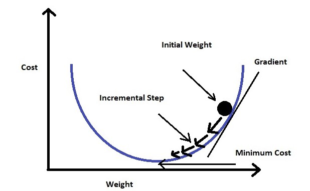
The learning rate (\(\alpha\)) controls step size:
- Too large: overshoot the minimum, training diverges
- Too small: training is painfully slow, may get stuck in local minima
- Just right: converges efficiently to a good solution
Reference Card: Gradient Descent Variants
| Variant | Batch Size | Pros | Cons |
|---|---|---|---|
| Batch GD | Entire dataset | Stable convergence | Slow, memory-intensive |
| Stochastic GD (SGD) | Single sample | Fast updates, can escape local minima | Noisy, unstable |
| Mini-batch GD | Small subset (32–512) | Best of both worlds | Requires batch size tuning |
Modern practice almost always uses mini-batch gradient descent — that’s what the batch_size parameter in model.fit() controls. The default is 32, which is a good starting point. Larger batches use more memory but give more stable gradients; smaller batches are noisier but can help escape local minima.
The other key choice is the optimizer. Adam (the default in most Keras examples) automatically adjusts the learning rate for each parameter, so it works well out of the box. If you need more control, SGD with a tuned learning rate is the classic alternative.
Code Snippet: Optimizers
## Adam — good default
model.compile(optimizer='adam', loss='categorical_crossentropy')
## SGD — when you want explicit control
from keras.optimizers import SGD
model.compile(optimizer=SGD(learning_rate=0.01), loss='categorical_crossentropy')Regularization
Regularization is any technique that constrains a model to prevent it from fitting the training data too closely — trading a small increase in training error for much better performance on new data. The core idea: a model with fewer effective degrees of freedom is forced to learn general patterns rather than memorizing noise.
Why does this matter for neural networks? We saw overfitting in the last lecture — a model that memorizes training data (including its noise) rather than learning general patterns. Neural networks are especially prone to this because they have so many parameters. The classic sign: training accuracy keeps climbing while validation accuracy plateaus or drops.
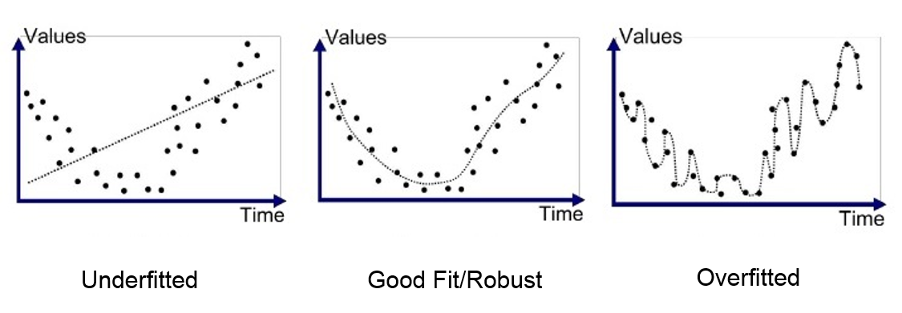
The tank detector parable from earlier is a perfect example: the network overfit to weather patterns in the training photos instead of learning what tanks actually look like. Regularization techniques — adding penalties to large weights, randomly dropping neurons, or stopping training early — push the model toward simpler, more generalizable solutions.
Reference Card: Regularization Techniques
| Technique | How It Works | Keras Usage |
|---|---|---|
| L1 Regularization | Adds sum of absolute weights to loss; encourages sparsity | Dense(64, kernel_regularizer='l1') |
| L2 Regularization | Adds sum of squared weights to loss; penalizes large weights | Dense(64, kernel_regularizer='l2') |
| Dropout | Randomly zeros a fraction of neurons during training | Dropout(0.5) layer |
| Early Stopping | Stops training when validation loss stops improving | EarlyStopping callback |
| Data Augmentation | Applies random transformations to training data (rotation, flip, etc.) | keras.layers.RandomFlip, RandomRotation, etc. |
Preparing Data for Neural Networks
Neural networks are sensitive to input scale. Features with large values will dominate training, so normalizing or standardizing inputs is essential — not optional. You already know StandardScaler from last lecture — the same tool applies here, along with a few neural-network-specific steps.
Reference Card: Data Preparation
| Step | What to Do | Why |
|---|---|---|
| Split first | Train/validation/test split before any preprocessing | Prevents data leakage — validation data must never influence preprocessing |
| Normalize | Scale features to [0, 1] with MinMaxScaler |
Good for bounded data (e.g., pixel values) |
| Standardize | Center to mean=0, std=1 with StandardScaler |
Good default for most tabular features |
| Encode labels | One-hot encode with to_categorical() or LabelEncoder |
Neural networks need numeric targets |
| Reshape | Match expected input shape (e.g., (28, 28, 1) for images) |
Layers expect specific tensor dimensions |
Code Snippet: Preparing Inputs
from sklearn.preprocessing import StandardScaler
from keras.utils import to_categorical
## Scale features (fit on training data only)
scaler = StandardScaler()
X_train = scaler.fit_transform(X_train)
X_val = scaler.transform(X_val)
## One-hot encode labels for multi-class
y_train = to_categorical(y_train, num_classes=10)
y_val = to_categorical(y_val, num_classes=10)Keras: The Framework We’ll Use
Now that you understand what cost functions, backpropagation, gradient descent, and regularization do, here’s how you use them in practice. Keras is a high-level deep learning API that gives you the same define-compile-fit workflow you saw with scikit-learn, but with more control over model architecture.
Import styles: You’ll see two import patterns in the wild:
from keras import Sequential(standalone Keras) andfrom tensorflow.keras import Sequential(TensorFlow-bundled). Both work. Standalonekerasis the modern default (Keras 3+);tensorflow.kerasis common in older tutorials. Either is fine for this course.
The basic workflow:
- Define the model — stack layers using
Sequential - Compile — specify the optimizer, loss function, and metrics
- Fit — train on data with
model.fit() - Evaluate / Predict — test on new data
Code Snippet: Keras Workflow
from keras import Sequential
from keras.layers import Dense
## 1. Define
model = Sequential([
Dense(64, activation='relu', input_shape=(10,)),
Dense(3, activation='softmax')
])
## 2. Compile
model.compile(optimizer='adam',
loss='categorical_crossentropy',
metrics=['accuracy'])
## 3. Fit
history = model.fit(X_train, y_train,
validation_data=(X_val, y_val),
epochs=20)
## 4. Predict
predictions = model.predict(X_new)Reference Card: model.compile()
| Component | Details |
|---|---|
| Function | model.compile(optimizer, loss, metrics) |
| Purpose | Configure the model for training |
| Key Parameters | • optimizer: Which optimizer to use — 'adam' (good default) or 'sgd' (more control)• loss: Loss function — 'categorical_crossentropy', 'binary_crossentropy', 'mse', etc.• metrics: List of metrics to track, e.g. ['accuracy'] |
Reference Card: model.fit()
| Component | Details |
|---|---|
| Function | model.fit(x, y, ...) |
| Purpose | Train the model for a fixed number of epochs on the given data |
| Key Parameters | • x, y: Training data and labels• epochs: Number of passes through the full dataset• batch_size: Samples per gradient update (default 32)• validation_data: Tuple (X_val, y_val) for monitoring• callbacks: List of callback objects (EarlyStopping, etc.) |
| Returns | History object with loss/metric values per epoch |
Code Snippet: Choosing a Loss Function
## Binary classification — sigmoid output + binary cross-entropy
model.compile(optimizer='adam', loss='binary_crossentropy', metrics=['accuracy'])
## Multi-class classification — softmax output + categorical cross-entropy
model.compile(optimizer='adam', loss='categorical_crossentropy', metrics=['accuracy'])
## Regression — linear output + MSE
model.compile(optimizer='adam', loss='mse')Code Snippet: Regularization in Practice
from keras import Sequential
from keras.layers import Dense, Dropout
model = Sequential([
Dense(128, activation='relu', input_shape=(784,),
kernel_regularizer='l2'),
Dropout(0.5),
Dense(64, activation='relu', kernel_regularizer='l2'),
Dropout(0.3),
Dense(10, activation='softmax')
])LIVE DEMO!!
Model Architecture
The architecture of a neural network — its layers, connections, and shapes — defines what it can learn. We’ll start by building simple networks from Dense layers, then see why specialized layers like Conv2D and LSTM exist.
Starting Simple: Dense Networks
The simplest neural network is a stack of Dense (fully connected) layers. Every neuron in one layer connects to every neuron in the next.
Reference Card: Dense
| Component | Details |
|---|---|
| Function | keras.layers.Dense(units, activation=None) |
| Purpose | Fully connected layer — every input connects to every output |
| Key Parameters | • units: Number of output neurons• activation: Activation function ('relu', 'sigmoid', 'softmax', etc.)• input_shape: Required on the first layer only• kernel_regularizer: Optional weight regularization ('l1', 'l2') |
| Use Cases | Hidden layers in any network, output layers for classification/regression |
Code Snippet: Dense Network for Image Classification
from keras import Sequential
from keras.layers import Dense, Flatten, Dropout
## Classify 28x28 grayscale images using only Dense layers
model = Sequential([
Flatten(input_shape=(28, 28, 1)), # Flatten 2D image into 1D vector (784 values)
Dense(128, activation='relu'),
Dropout(0.3),
Dense(64, activation='relu'),
Dense(10, activation='softmax')
])
model.compile(optimizer='adam', loss='categorical_crossentropy', metrics=['accuracy'])
model.summary()This works, but it has limitations: Flatten destroys spatial structure. The model sees 784 independent numbers — it doesn’t know which pixels are neighbors. For images, we need layers that understand spatial relationships.
Common Layer Types
Beyond Dense layers, Keras provides specialized layers for different data types. Here’s a quick overview — we’ll cover the most important ones (Conv2D and LSTM) in detail below.
| Layer Type | Purpose | When to Use |
|---|---|---|
| Dense | Fully connected layer | Final layers, tabular data |
| BatchNorm | Normalize layer inputs | Deep networks, unstable training |
| Dropout | Prevent overfitting | After Dense or Conv layers |
| Embedding | Map indices to dense vectors | Text, categorical data |
| Conv2D | Spatial feature extraction | Images, medical imaging |
| LSTM/GRU | Sequential data with memory | Time series, clinical notes |
Reference Card: Dropout
| Component | Details |
|---|---|
| Function | keras.layers.Dropout(rate) |
| Purpose | Randomly set a fraction of input units to zero during training to prevent overfitting |
| Key Parameters | rate: Fraction of inputs to drop (e.g., 0.5 = 50%) |
| Behavior | Active during training only — at inference, all neurons are used (with scaled outputs) |
| Placement | After Dense or Conv layers, before the next layer |
Reference Card: BatchNormalization
| Component | Details |
|---|---|
| Function | keras.layers.BatchNormalization() |
| Purpose | Normalize each layer’s inputs to zero mean and unit variance, stabilizing and accelerating training |
| Key Parameters | • momentum: Running mean/variance update rate (default 0.99)• epsilon: Small constant for numerical stability |
| Behavior | Uses batch statistics during training; uses running averages during inference |
| Placement | Typically after a Dense or Conv layer, before the activation function |
Convolutional Neural Networks (CNNs)
Dense layers treat every input pixel independently — Flatten turns a 28x28 image into 784 numbers and the network has no idea which pixels are neighbors. A convolutional layer instead slides a small filter (kernel) across the image, detecting local patterns — edges, textures, shapes — regardless of where they appear.
Imagine a tiny 3x3 window scanning across a chest X-ray. At each position, the filter multiplies its 9 learned values against the 9 pixels it overlaps, producing a single output number. A filter tuned to detect horizontal edges will “light up” wherever the image has a horizontal edge — whether that’s in the top-left corner or bottom-right. This is why CNNs are so powerful for medical imaging: the same tumor edge pattern gets detected no matter where it appears in the scan.
CNNs learn hierarchical features: early layers detect edges and textures, deeper layers combine those into shapes and objects — much like how the visual cortex processes information in stages.
Building a CNN Step by Step
Start with the same image classification task, but replace the Dense-only approach:
| Step | Layer | Purpose |
|---|---|---|
| 1 | Conv2D | Scan the image with learnable filters to detect local patterns |
| 2 | MaxPooling2D | Shrink the feature maps, keeping the strongest signals |
| 3 | Repeat | Stack more Conv2D + Pooling to learn higher-level features |
| 4 | Flatten + Dense | Convert the feature maps to a classification |
Reference Card: Conv2D
| Component | Details |
|---|---|
| Function | keras.layers.Conv2D() |
| Purpose | Apply learnable filters to extract spatial features from images |
| Key Parameters | • filters: Number of output filters• kernel_size: Size of convolution window (e.g., 3 or (3,3))• strides: Step size for sliding window• padding: 'valid' (no padding) or 'same' (preserve dimensions)• activation: Activation function |
| Output Shape | (batch, height, width, filters) |
Reference Card: MaxPooling2D
| Component | Details |
|---|---|
| Function | keras.layers.MaxPooling2D() |
| Purpose | Downsample by taking maximum value in each window |
| Key Parameters | • pool_size: Window size (e.g., (2,2))• strides: Step size (defaults to pool_size)• padding: 'valid' or 'same' |
| Effect | Reduces spatial dimensions; helps detect features regardless of exact position |
Reference Card: Flatten
| Component | Details |
|---|---|
| Function | keras.layers.Flatten(input_shape=None) |
| Purpose | Reshape a multi-dimensional tensor into a 1D vector so it can be fed to Dense layers |
| Key Parameters | input_shape: Required only on the first layer (e.g., (28, 28, 1) for grayscale images) |
| Typical Placement | Between Conv2D/Pooling layers and Dense classification layers |
| Note | Destroys spatial structure — use only when transitioning from feature extraction to classification |
Code Snippet: Building a CNN
from keras import Sequential
from keras.layers import Conv2D, MaxPooling2D, Flatten, Dense, Dropout
## Same task as the Dense model, but now using spatial structure
model = Sequential([
# Layer 1: detect simple patterns (edges, textures)
Conv2D(32, (3, 3), activation='relu', input_shape=(28, 28, 1)),
MaxPooling2D((2, 2)),
# Layer 2: combine simple patterns into complex features
Conv2D(64, (3, 3), activation='relu'),
MaxPooling2D((2, 2)),
# Classification head: same Dense layers as before
Flatten(), # Reshape 2D feature maps into a 1D vector for Dense layers
Dropout(0.5),
Dense(64, activation='relu'),
Dense(10, activation='softmax')
])Compare this to the Dense-only model: the first half (Conv2D + Pooling) extracts spatial features that the Dense layers can then classify. This typically improves accuracy on image tasks significantly.
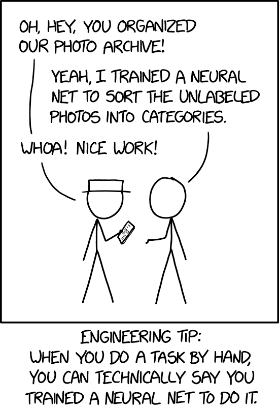
Recurrent Neural Networks (RNNs)
Every model we’ve seen so far — from logistic regression in the last lecture to CNNs above — treats each input as independent. A blood pressure reading is just a number; a pixel is just a value. But some data has a meaningful order — a patient’s vital signs over 24 hours, words in a clinical note, beats in an ECG trace. The order carries information, and ignoring it throws away signal. A blood pressure of 180 means something very different if the previous reading was 120 (sudden spike) versus 175 (stable-high).
RNNs maintain a hidden state that carries information from previous time steps, so the network can “remember” what it has seen.
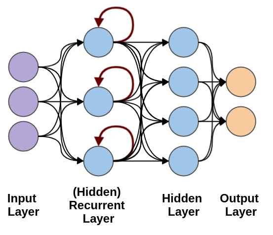
A basic RNN (SimpleRNN) processes sequences one step at a time, but struggles with long sequences — gradients vanish over many time steps. LSTM fixes this with a gating mechanism that controls what information to keep, forget, and output. We’ll see both side-by-side in the demo.
Long Short-Term Memory (LSTM)
Three gates control information flow:
- Forget Gate: What information to discard from the cell state
- Input Gate: What new information to store in the cell state
- Output Gate: What information to output from the cell state
Reference Card: LSTM
| Component | Details |
|---|---|
| Function | keras.layers.LSTM() |
| Purpose | Process sequential data with long-term memory |
| Key Parameters | • units: Dimensionality of output space• return_sequences: Return full sequence (True) or just last output (False)• dropout: Fraction of units to drop for inputs• recurrent_dropout: Fraction to drop for recurrent state |
| Use Cases | Time series forecasting, text generation, clinical sequence data |
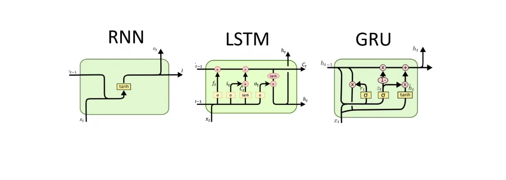
The internal architecture shows how LSTM’s three gates (forget, input, output) and GRU’s simpler two-gate design (reset, update) control information flow. GRU is faster to train with fewer parameters, while LSTM is more expressive for complex sequences:
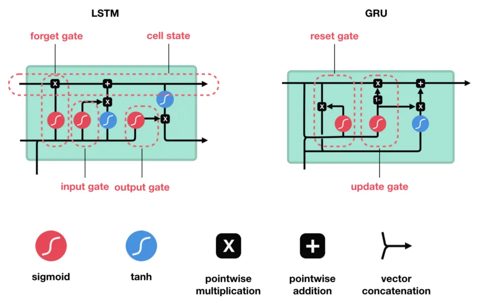
Code Snippet: LSTM for Time Series
from keras import Sequential
from keras.layers import LSTM, Dense, Dropout
## Classify ECG recordings: 140 time steps, 1 feature (voltage)
model = Sequential([
LSTM(64, input_shape=(140, 1)),
Dropout(0.2),
Dense(32, activation='relu'),
Dense(5, activation='softmax') # 5 heartbeat classes
])
model.compile(optimizer='adam', loss='categorical_crossentropy', metrics=['accuracy'])Embeddings
Neural networks need numeric inputs, but many real-world features are categorical — words, diagnosis codes, medication names. One-hot encoding works for a handful of categories, but a vocabulary of 10,000 words would produce 10,000-dimensional sparse vectors where each word is equally “distant” from every other word. That’s wasteful and misses relationships: “aspirin” and “ibuprofen” should be closer together than “aspirin” and “stethoscope.”
An embedding layer solves this by learning a compact, dense vector for each category. Instead of a 10,000-element one-hot vector, each word gets mapped to (say) a 64-dimensional vector — and the network learns those vectors during training so that similar items end up with similar representations. Embeddings are the standard first layer for any model that processes text or high-cardinality categorical data.
Reference Card: Embedding
| Component | Details |
|---|---|
| Function | keras.layers.Embedding(input_dim, output_dim, input_length=None) |
| Purpose | Map integer indices (e.g., word IDs) to dense vectors the network can learn from |
| Key Parameters | • input_dim: Size of the vocabulary (max integer index + 1)• output_dim: Dimension of the dense embedding vectors• input_length: Length of input sequences (required for downstream Dense layers) |
| Output Shape | (batch_size, input_length, output_dim) |
| Use Cases | Text inputs for LSTM/GRU, categorical features with many levels |
Code Snippet: Embedding + LSTM for Text Classification
from keras import Sequential
from keras.layers import Embedding, LSTM, Dense
## Classify patient reviews as satisfied/unsatisfied
## Input: sequences of word IDs, padded to 200 tokens
model = Sequential([
Embedding(input_dim=10000, output_dim=64, input_length=200),
LSTM(64),
Dense(1, activation='sigmoid') # Output: probability between 0 and 1
])
model.compile(optimizer='adam', loss='binary_crossentropy', metrics=['accuracy'])
## The labels define the task — the architecture just defines the shape
## X_train: array of word ID sequences, shape (num_reviews, 200)
## y_train: array of 0s and 1s (unsatisfied/satisfied)
model.fit(X_train, y_train, validation_data=(X_val, y_val), epochs=10)
## Predict on a new review (preprocessed to word IDs, padded to 200 tokens)
model.predict(new_review) # e.g., 0.87 → 87% chance satisfiedTraining in Practice
Building a model is only half the job — you also need to manage the training process. This section covers the tools Keras provides for monitoring, saving, and controlling training runs.
Training Callbacks
Neural network training can take minutes to hours. You don’t want to babysit it — and you definitely don’t want to lose your best model because training ran too long and started overfitting. Callbacks hook into the training loop to save checkpoints, stop early, or log metrics — without modifying your training code.
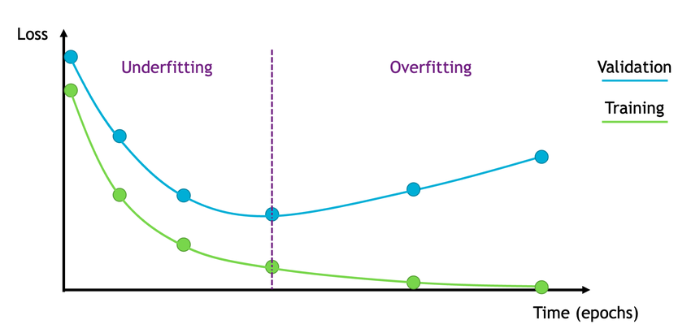
Reference Card: ModelCheckpoint
| Component | Details |
|---|---|
| Function | keras.callbacks.ModelCheckpoint() |
| Purpose | Save model weights or full model during training |
| Key Parameters | • filepath: Path to save (can include {epoch}, {val_loss})• save_best_only: Only save when monitored metric improves• monitor: Metric to monitor (e.g., 'val_loss')• save_weights_only: Save weights only or full model |
| Use Case | Keep best model for deployment, resume training after interruption |
Reference Card: EarlyStopping
| Component | Details |
|---|---|
| Function | keras.callbacks.EarlyStopping() |
| Purpose | Stop training when monitored metric stops improving |
| Key Parameters | • monitor: Metric to monitor (e.g., 'val_loss')• patience: Epochs to wait before stopping• restore_best_weights: Restore weights from best epoch• min_delta: Minimum change to qualify as improvement |
| Use Case | Prevent overfitting, save compute time |
Code Snippet: Training Callbacks
from keras.callbacks import ModelCheckpoint, EarlyStopping
callbacks = [
# Save only the best model (overwrites the file each time the metric improves)
ModelCheckpoint(
'best_model.keras',
save_best_only=True,
monitor='val_accuracy'
),
# Save every epoch (useful for resuming interrupted training)
ModelCheckpoint(
'checkpoints/epoch_{epoch:02d}.keras' # epoch_01.keras, epoch_02.keras, ...
),
EarlyStopping(
monitor='val_loss',
patience=5, # Stop if val_loss doesn't improve for 5 epochs
restore_best_weights=True # Roll back to the best epoch's weights
)
]
## With both callbacks: training stops before overfitting gets bad,
## and the saved file always contains the best model seen during training
history = model.fit(X_train, y_train,
validation_data=(X_val, y_val),
epochs=100,
callbacks=callbacks)Saving and Loading Models
Training can take hours — save checkpoints so you can resume or deploy without retraining. The ModelCheckpoint callback (above) handles this during training. For manual save/load:
Code Snippet: Save and Resume
## Save after training
model.save('my_model.keras')
## Resume later
from keras.models import load_model
model = load_model('my_model.keras')Keras vs. PyTorch
So far we’ve used Keras for everything. But you’ll encounter PyTorch in many tutorials, papers, and production systems. The core ideas are the same — layers, loss functions, optimizers, backpropagation — but the API style is different.
PyTorch offers a more explicit approach where you define the forward pass directly and write your own training loop. Here’s a preview to see how the same model looks in both frameworks.
Code Snippet: PyTorch Model
import torch
import torch.nn as nn
class SimpleNN(nn.Module):
def __init__(self):
super().__init__()
self.fc1 = nn.Linear(784, 128)
self.fc2 = nn.Linear(128, 10)
def forward(self, x):
x = torch.relu(self.fc1(x))
return self.fc2(x)
model = SimpleNN()
loss_fn = nn.CrossEntropyLoss()
optimizer = torch.optim.Adam(model.parameters(), lr=1e-3)
## Training loop (explicit — you control every step)
for inputs, targets in train_loader:
optimizer.zero_grad()
loss = loss_fn(model(inputs), targets)
loss.backward()
optimizer.step()Keras vs. PyTorch: Keras provides high-level APIs (
model.fit()) that handle the training loop for you. PyTorch gives you explicit control over every step. Both are widely used — Keras for rapid prototyping, PyTorch for research flexibility.

Neural Networks in Practice
Neural networks are powerful but not magic. Knowing when to use them — and when a simpler model from last lecture will do — is an important skill. Last week you compared logistic regression, random forests, XGBoost, and a simple neural network on handwritten digits — and the classical models held their own. A random forest on well-engineered features often beats a poorly configured neural network, and it’s far easier to explain to a clinician.
Reference Card: When to Use Neural Networks
| Scenario | Neural Network? | Better Alternative |
|---|---|---|
| Tabular data, <10k rows | Probably not | Random Forest, XGBoost |
| Image classification | Yes (CNN) | — |
| Time series / sequential data | Yes (LSTM/RNN) | ARIMA for simple forecasts |
| Text / NLP | Yes (Transformers) | Bag-of-words + LogReg for simple tasks |
| Structured data, interpretability required | No | Decision trees, logistic regression |
| Small labeled dataset | Transfer learning | Fine-tune a pre-trained model (e.g., ImageNet → your X-rays) instead of training from scratch |